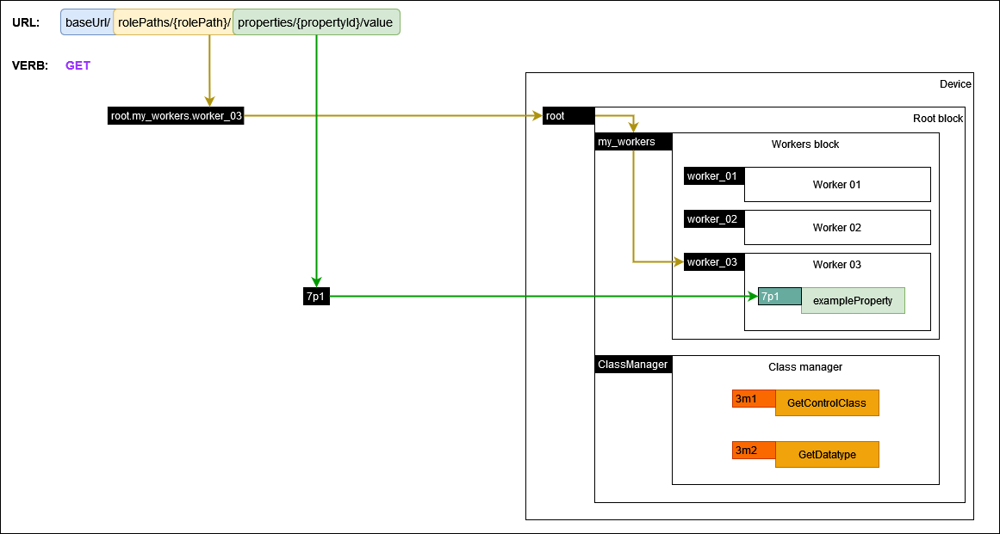
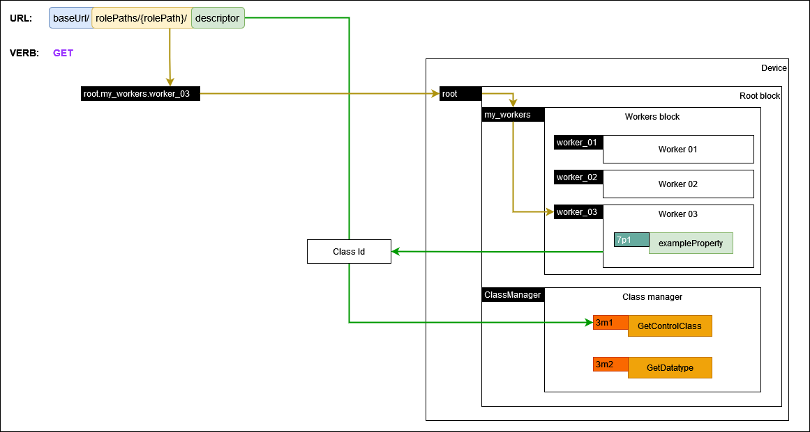
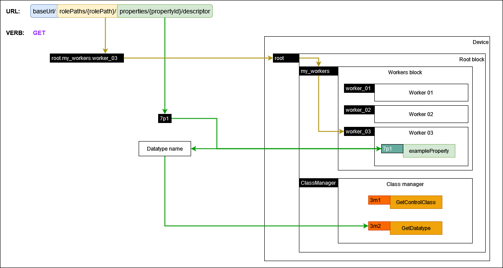
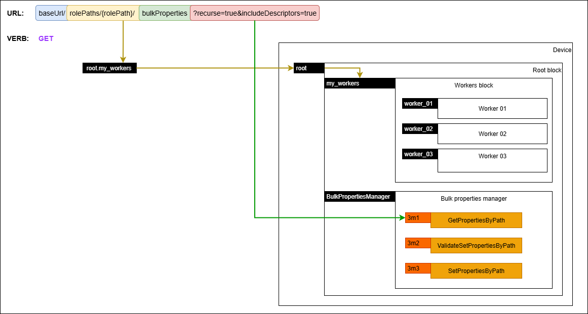
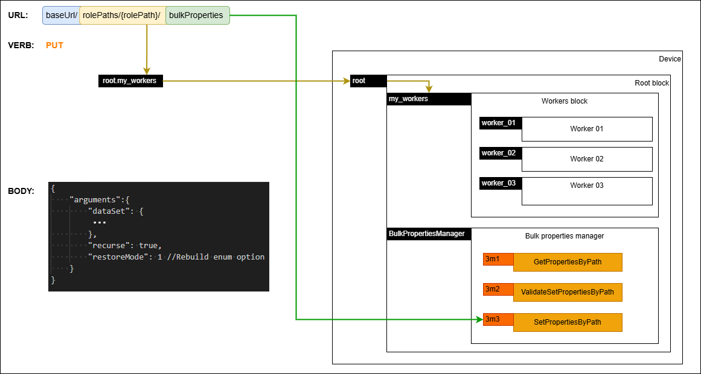
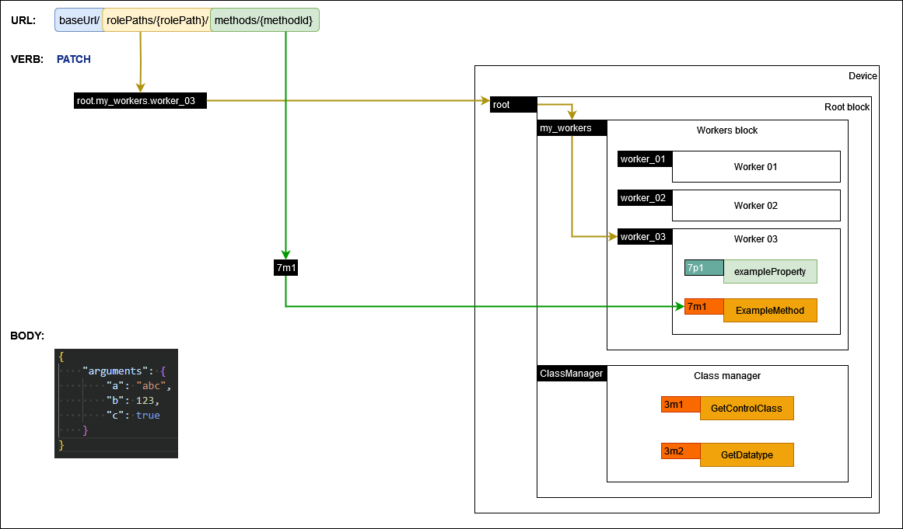

API requests
The endpoints are documented in the Configuration API.
Control session
Concurrency control is left to specific device implementations, however devices MUST always return relevant error response messages and statuses when there are conflicts, errors or other noteworthy states.
URL and usage
Clients MUST use the 'control' endpoint URL provided in the IS-04 device as the base URL for all subsequent requests.
As described in the Configuration API, the rolePaths endpoint MUST return all the device model's role paths. Each rolePath MUST be created by appending NcObject roles starting with the root block and using . as the delimiter. Consequently the . character MUST NOT be used inside individual object roles.
It is RECOMMENDED for device model objects roles to use Unreserved Characters as described in RFC 3986 - 2.3. Unreserved Characters. When Reserved Characters are used in an object role, they MUST be URL encoded when included in the rolePaths endpoint and subsequently in a URL.
Device model object roles are case sensitive and thus any rolePaths and URLs which include them are also case sensitive as described in RFC 7230.
Property identifiers used as part of a URL MUST be represented as a string of the format {propertyLevel}p{propertyIndex} where:
- propertyLevel - number representing the inheritance level of the class containing the property (see Control Classes)
- propertyIndex - number representing the index level of the property within the specified inheritance level (see Control Classes)
Method identifiers used as part of a URL MUST be represented as a string of the format {methodLevel}m{methodIndex} where:
- methodLevel - number representing the inheritance level of the class containing the method (see Control Classes)
- methodIndex - number representing the index level of the method within the specified inheritance level (see Control Classes)
As an example, for a given base URL, clients can target the root block by using {baseUrl}/root as the URL. Furthermore, clients can target the userLabel of the root block by using {baseUrl}/rolePaths/root/properties/1p6/value as the URL.
The following subsections define common use cases for the applicable HTTP verbs where resources are located using their associated rolePath.
| Verb | Scenario | URL format | Body | Response |
|---|---|---|---|---|
| GET | Get a property | baseUrl/rolePaths/{rolePath}/properties/{propertyId}/value | N/A | NcMethodResultPropertyValue with the contents of the property |
| GET | Get class descriptor | baseUrl/rolePaths/{rolePath}/descriptor | N/A | NcMethodResultClassDescriptor |
| GET | Get datatype descriptor | baseUrl/rolePaths/{rolePath}/properties/{propertyId}/descriptor | N/A | NcMethodResultDatatypeDescriptor |
| GET | Getting all the properties of a role path | baseUrl/rolePaths/{rolePath}/bulkProperties?recurse={value}&includeDescriptors={value} | N/A | NcMethodResultBulkPropertiesHolder |
| PUT | Modify a property | baseUrl/rolePaths/{rolePath}/properties/{propertyId}/value | property-value-put-request | NcMethodResult |
| PUT | Setting bulk properties for a role path | baseUrl/rolePaths/{rolePath}/bulkProperties | bulkProperties-put-request | NcMethodResultObjectPropertiesSetValidation |
| PATCH | Invoke a method | baseUrl/rolePaths/{rolePath}/methods/{methodId} | method-patch-request | NcMethodResult |
| PATCH | Validating bulk properties for a role path | baseUrl/rolePaths/{rolePath}/bulkProperties | bulkProperties-patch-request | NcMethodResultObjectPropertiesSetValidation |
GET
Getting a property
 |
|---|
| Getting a property |
Clients MUST target a specific property of an object by locating the object using its role path and the property using its property identifier and building a URL as per the following format baseUrl/rolePaths/{rolePath}/properties/{propertyId}/value. Devices MUST return a response of type NcMethodResultPropertyValue containing the value of that property when successful. If the request encountered an error then devices MUST return a response of type NcMethodResultError or a derived datatype and include an error message.
Note that this is equivalent to invoking the generic Get method on the specific object for the required property.
Getting the class descriptor of an object
 |
|---|
| Getting class descriptor |
Clients MUST target a specific object in the device model and build a URL as per the following format baseUrl/rolePaths/{rolePath}/descriptor. Devices MUST return a response of type NcMethodResultClassDescriptor including a descriptor which has all inherited elements. If the request encountered an error then devices MUST return a response of type NcMethodResultError or a derived datatype and include an error message.
Note that this is equivalent to invoking the GetControlClass method on the Class Manager object and including all inherited elements.
Getting the datatype descriptor of a property
 |
|---|
| Getting datatype descriptor |
Clients MUST target a specific property of an object by locating the object using its role path and the property using its property identifier and building a URL as per the following format baseUrl/rolePaths/{rolePath}/properties/{propertyId}/descriptor. Devices MUST return a response of type NcMethodResultDatatypeDescriptor including a descriptor which has all inherited elements. If the request encountered an error then devices MUST return a response of type NcMethodResultError or a derived datatype and include an error message.
Note that this is equivalent to invoking the GetDatatype method on the Class Manager object and including inherited elements.
Getting all the properties of a role path
 |
|---|
| Getting bulk properties |
Clients MUST target a specific role path in the device model by locating the object using its role path and building a URL (optionally specifying the recurse and includeDescriptors parameters) as per the following format baseUrl/rolePaths/{rolePath}/bulkProperties?recurse={true|false}&includeDescriptors={true|false}. Not including the query parameters MUST be treated as providing a value of true to both of them. Devices MUST return a response of type NcMethodResultBulkPropertiesHolder and MUST include all the properties of the target role path, including inherited properties, as a bulk properties holder. If the recurse argument is set to true then devices MUST include all the properties of the target role path as well as any nested role paths in the response. If the includeDescriptors argument is set to true devices MUST set the descriptor of each property holder to a non-null value and MUST include an entry for the ClassManager role path if it was in scope of the backup. Alternatively, if the includeDescriptors argument is set to false devices MUST set the descriptor of each property holder to a null value and MUST NOT include an entry for the ClassManager role path even if it was in scope of the backup. If the request encountered an error then devices MUST return a response of type NcMethodResultError or a derived datatype and include an error message.
Note that this is equivalent to invoking the GetPropertiesByPath method on the Bulk properties manager object.
Note that if the target role path used is the ClassManager's role path, and the includeDescriptors argument is set to false, the response will include a bulk properties holder with an empty values collection.
Clients MAY perform a full backup or a partial backup by retrieving properties through the bulkProperties endpoint.
A full backup is a backup data set returned by a GET operation on the /bulkProperties endpoint of the root block with the recurse parameter set to true.
A partial backup is a backup data set returned by a GET operation on the /bulkProperties endpoint of any object of the device model, other than the root block. A partial backup can also be generated by a GET operation on the /bulkProperties endpoint of the root block with the recurse query parameter set to false; however this will only result in a backup of the root block.
Note that a full backup with its descriptors filtered out is still considered a full backup, as it only excludes descriptors which are readonly metadata that do not affect device operation.
PUT
Changing a property
| Putting a property |
Clients MUST use the PUT verb when setting individual object properties.
Clients MUST target a specific property of an object by locating the object using its role path and the property using its property identifier and building a URL as per the following format baseUrl/rolePaths/{rolePath}/properties/{propertyId}/value. Devices MUST return a response of type NcMethodResult. If the request encountered an error then devices MUST return a response of type NcMethodResultError or a derived datatype and include an error message.
Clients MUST include an object which contains the new value of the property in the body of the request as per the property-value-put-request schema.
Note that this is equivalent to invoking the generic Set method on the specific object for the required property.
Setting bulk properties for a role path
 |
|---|
| Setting bulk properties |
Clients MUST use the PUT verb for setting a bulk properties data set.
Clients MUST target a specific role path in the device model by locating the object using its role path and building a URL as per the following format baseUrl/rolePaths/{rolePath}/bulkProperties.
Clients MUST include an object which contains an arguments object with dataSet, recurse and restoreMode sub elements in the body of the request as per the bulkProperties-put-request schema.
{
"arguments": {
"dataSet": {
...
},
"recurse": true,
"restoreMode": 1
}
}
In their attempt to use the provided dataSet, devices MUST target the properties of the target role path and all nested role paths when the body of the request contains the recurse value set to true.
Devices MUST return a response of type NcMethodResultObjectPropertiesSetValidation. If the request encountered an error then devices MUST return a response of type NcMethodResultError or a derived datatype and include an error message.
Note that this is equivalent to invoking the SetPropertiesByPath method inside the Bulk properties manager object.
Setting properties through the bulkProperties endpoint allows a user to perform a restore.
PATCH
Invoking a method
 |
|---|
| Invoking a method |
Clients MUST use the PATCH verb when invoking object methods.
Clients MUST target a specific method of an object by locating the object using its role path and the method using its method identifier and building a URL as per the following format baseUrl/rolePaths/{rolePath}/methods/{methodId}.
Clients MUST include an object which contains an arguments object in the body of the request as per the method-patch-request schema. For methods which do not have arguments defined clients MUST include an empty arguments object in the request body.
{
"arguments": {
...
}
}
Devices MUST return a response of type NcMethodResult. If the request encountered an error then devices MUST return a response of type NcMethodResultError or a derived datatype and include an error message.
Note that this is equivalent to invoking the specified method.
Validating bulk properties for a role path
| Validating bulk properties |
Clients MUST use the PATCH verb for validating a bulk properties data set.
Clients MUST target a specific role path in the device model by locating the object using its role path and building a URL as per the following format baseUrl/rolePaths/{rolePath}/bulkProperties.
Clients MUST include an object which contains an arguments object with dataSet, recurse and restoreMode sub elements in the body of the request as per the bulkProperties-patch-request schema.
{
"arguments": {
"dataSet": {
...
},
"recurse": true,
"restoreMode": 1
}
}
In their attempt to use the provided dataSet, devices MUST target the properties of the target role path and all nested role paths when the body of the request contains the recurse value set to true.
Devices MUST return a response of type NcMethodResultObjectPropertiesSetValidation. If the request encountered an error then devices MUST return a response of type NcMethodResultError or a derived datatype and include an error message.
Devices MUST NOT make any changes to the device model when validating bulk properties.
Note that this is equivalent to invoking the ValidateSetPropertiesByPath method inside the Bulk properties manager object.
Clients MAY use this validation mechanism before attempting to perform a restore by applying bulk properties.